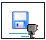

Warning
This document is in the middle of a major revision. Some sections might be missing text, or have French text as placeholder.
前面提到过，本教程设计了一些关卡，你通过让乐跑通关的方式来学习编程。要了解关卡的细节，你可以点击乐跑的世界上方的 世界信息 按钮来打开任务详情。再次点击该按钮可关闭任务详情。
所有关卡被分为两组：
此时，你可能还没有足够的知识来给可变任务编程。然而，一旦掌握了所需的知识，不仅仅是完成任务，同时你会发现你能把程序写得更短。
固定任务包括：
其实还有一个固定任务叫做 送报纸之一 。但在动手之前，你需要先学习使用“函数的参数”，以便能更容易地完成。
请试着给其中的几个任务编程。
你写的每一个程序，都包含一系列特定的指令。和乐跑相比，你可以看到全局，而它只能看到它所在的格子。所以，你应该开始以这种方式思考：乐跑如何才能根据它所得到的线索来决定下一步的行动。这种思考方式以后会很有用。
由于使用了所谓的 本地存储空间 ，乐跑的世界记得你上一次在浏览器（Firefox 或 Chrome）里的工作进度。但是，把你的程序保存在电脑或 U 盘里仍然很有必要。你可以通过点击有这个  图案按钮来保存进度。
在保存的时候，你需要记录一下该程序是设计给哪个世界的，就像这样写个注释：
# “回家之一”的解决方案
move()
move()
写给教育者的内容
如果你已经介绍了怎样使用函数的参数，那么用 World() 函数来代替简单的注释可能更好些：
World("回家之一")
move()
move()
如果当前的世界不是 回家之一 ，那么运行此程序，当前的世界将切换到 回家之一 ， World() 后面的指令将会被忽略。再一次运行此程序——此时当前的世界是 回家之一 ， World() 指令将会被忽略，其后的指令将会被执行。
除了预先定义的世界，你也可以使用任何用网址能访问到的世界——也许是在你自己的服务器或者是像 pastebin 这样的公共存储库上。例如，你可以试试下面这个：
World("http://personnel.usainteanne.ca/aroberge/reeborg/token.json",
"笑脸测试")
move()
move()
take()
运行此程序会增加一个名为“笑脸测试”的世界。请留意，如果给出了 World 函数的第二个（可选）参数，那么该参数将被作为新世界的名字添加到列表里。